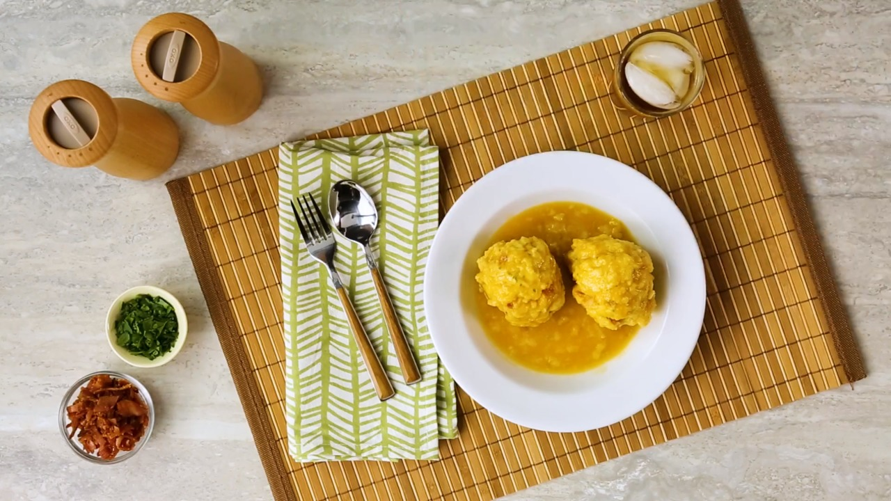

Dumplings
Dumplings.
Ingredients
- 2 slices bacon
- 2 cups all-purpose flour
- 1 pinch salt
- 1 ½ tablespoons baking powder
- 1 teaspoon dried parsley
- ground black pepper to taste
- 2 eggs
- ¼ cup milk
- 1 quart vegetable broth
Steps
- 1. Place bacon in a large, deep skillet. Cook over medium high heat until evenly brown. Drain, reserving drippings, crumble and set aside.
- 2. In a large bowl sift together flour, salt and baking powder. Gently stir in parsley and pepper. In a 1 cup measuring cup, beat eggs and add enough milk to reach the 1/2 cup level. Stir the egg mixture and the bacon drippings into the flour; stir with a fork until well blended. Add more milk if dough is too dry. Stir in the crumbled bacon; mix well.
- 3. In a 2 quart saucepan heat broth over medium heat. Drop dough by spoonfuls into simmering broth. Cover and cook about 12 minutes, or until done.